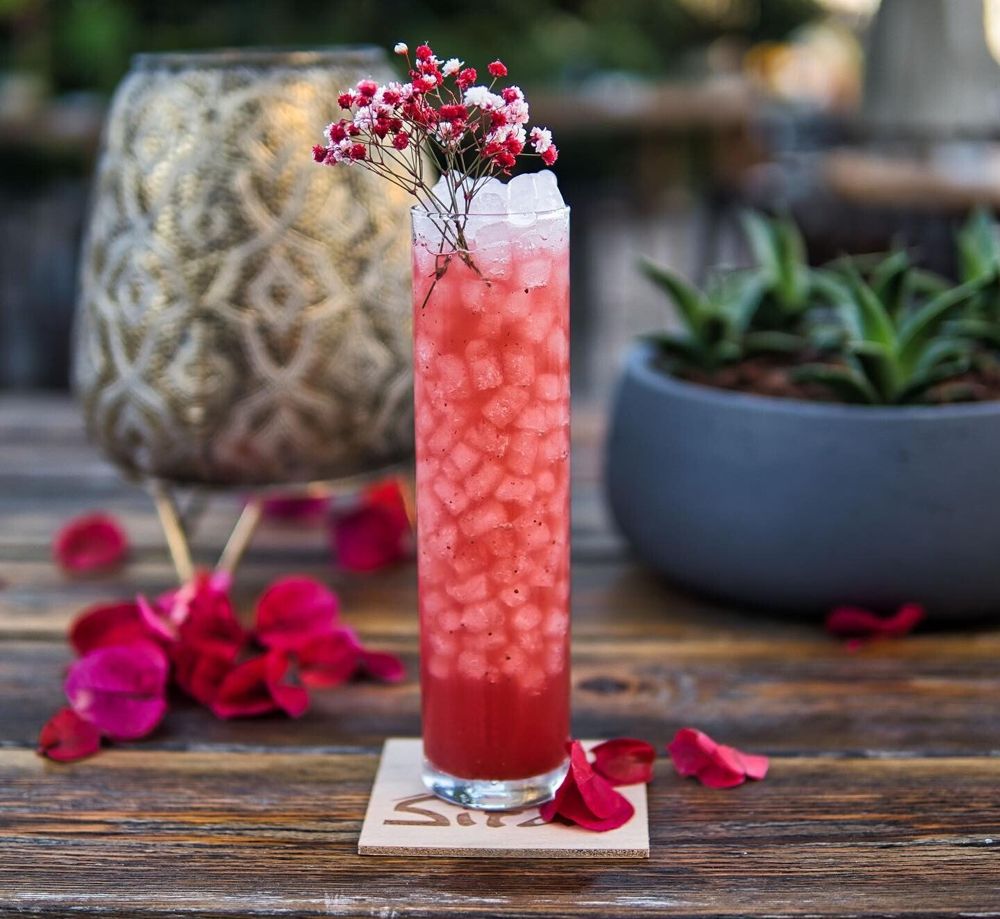
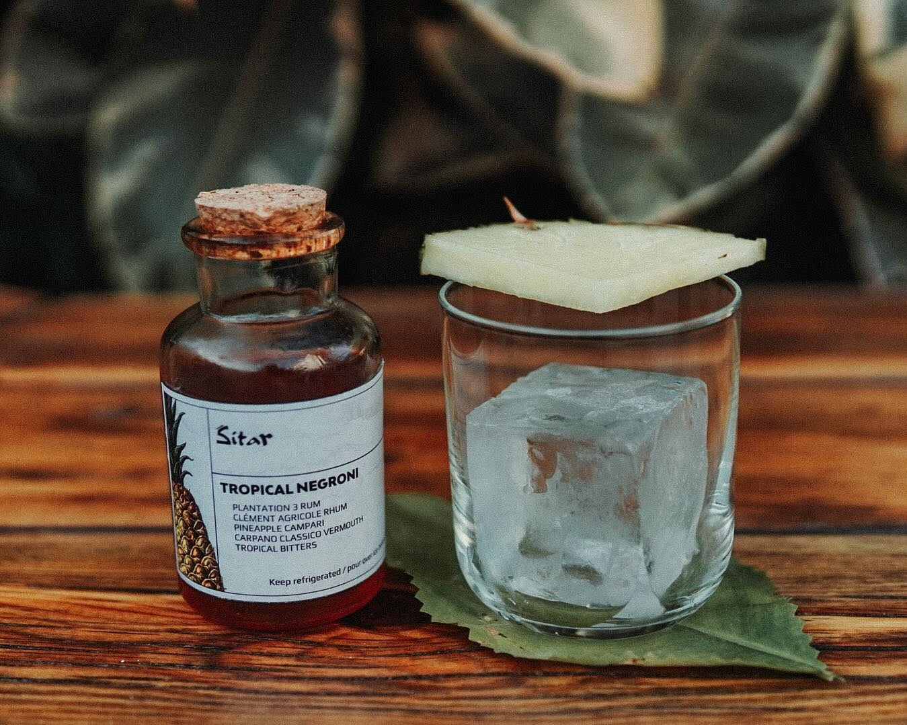
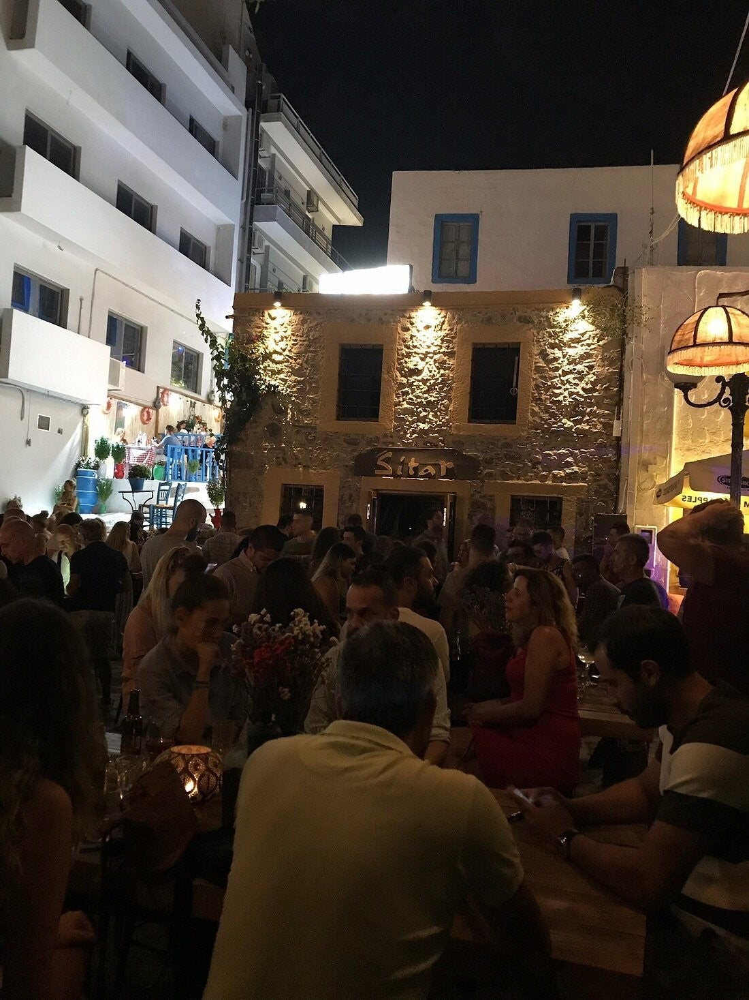
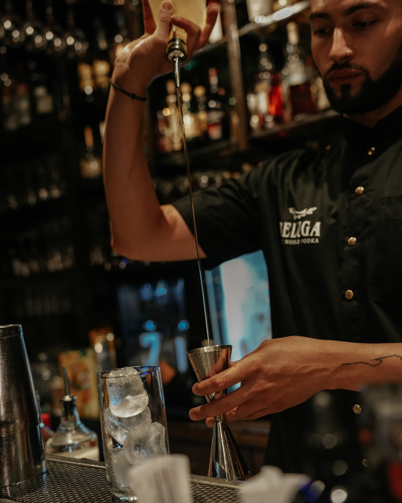
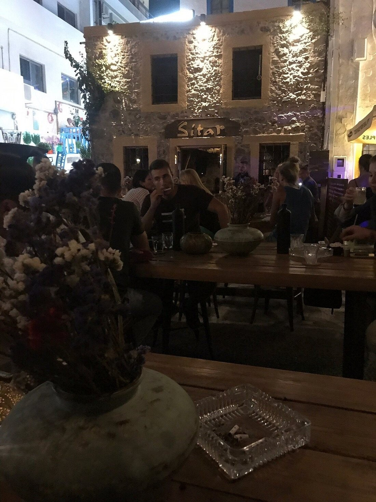
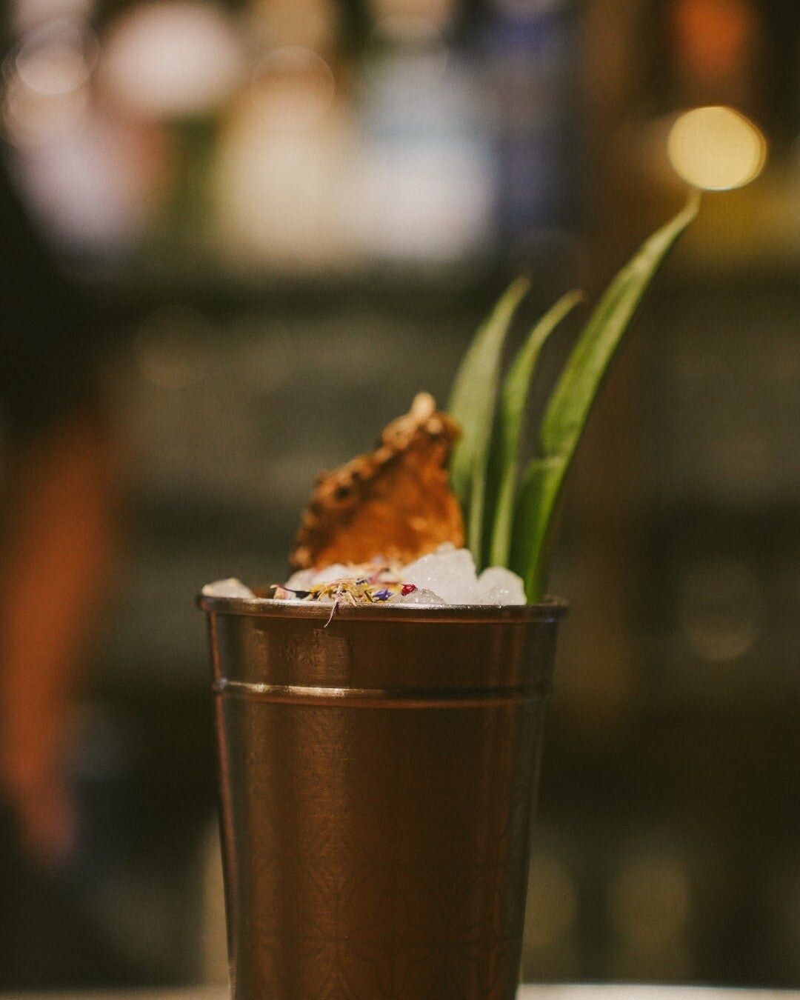
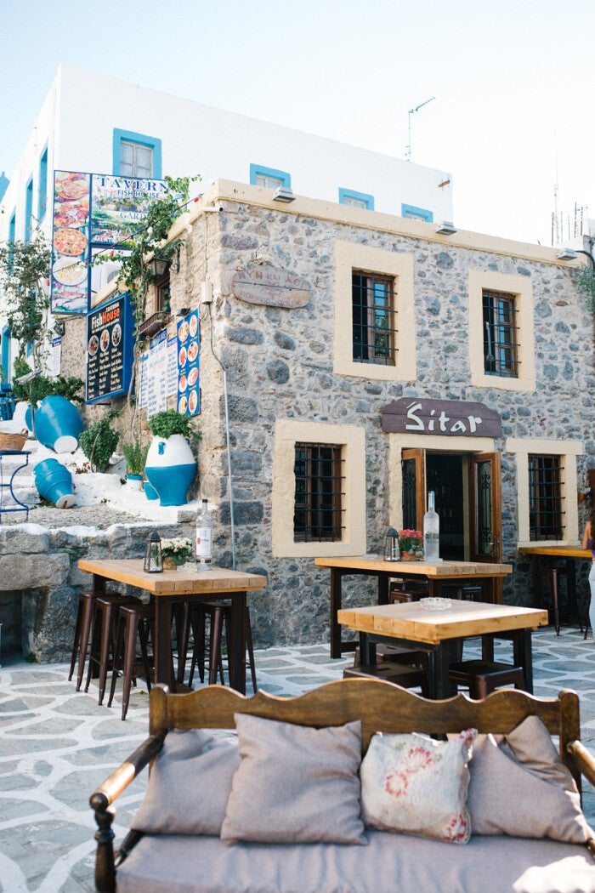
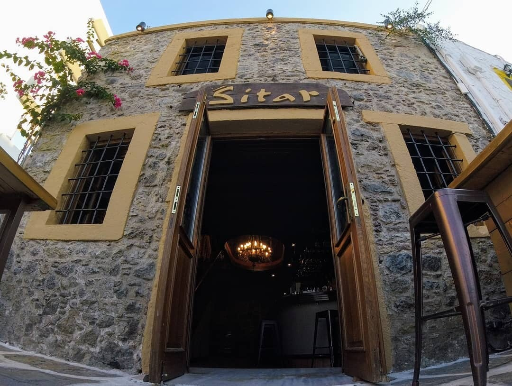

Kos - Centrum
Sitar Cocktail Bar is gevestigd in het hart van Kos-stad, dicht bij de haven, en wordt vaak geprezen als een van de beste cocktailbars van het eiland. Deze bar is uitsluitend 's avonds geopend en trekt je als toerist aan, en ook lokale bewoners, die komen genieten van de uitgebreide cocktailkaart. Het is een hotspot in Kos.

Nachtleven
Sitar Cocktail Bar is een stijlvolle en chique cocktailbar in het centrum van Kos-stad (vlakbij de haven, die puur gericht is op avond- en nachtleven. Het gaat open rond 19:00 uur en draait door tot 03:00–04:00 uur, afhankelijk van het seizoen en events,

Starten
Buiten staan veel hoge tafels waar mensen met een drankje bij elkaar staan. Er wordt soms gedanst, maar op een rustige manier en zonder dat het een echte dansclub wordt. Daardoor is het een plek waar veel mensen eerst samenkomen voordat ze later op de avond ergens anders naartoe gaan

Veel Locals
In de loop van de avond wordt het er vaak erg druk, vooral met gasten die later op de avond nog verder de stad in gaan.

Het publiek bestaat voor een groot deel uit lokale bewoners, waardoor de sfeer anders is dan in de Barstreet.

Over het algemeen komen hier 25+ bezoekers en is de omgeving harde muziek maar wel gericht op praten en drinken dan op uitbundig feesten. Als toerist zie je dat er meestal niet snel uitbundig in het openbaar gedanst wordt, maar er wordt wel muziek gedraaid, vaak een mix van jaren-80- en jaren-90-hits, house en techno.


